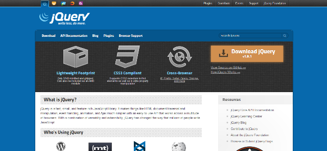
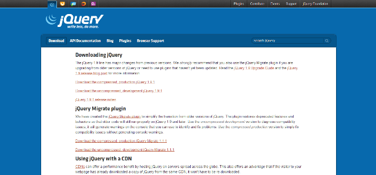

Podemos estar obtendo o jQuery gratuitamente no site: Jquery.
Nessa página inicial clique no botão “download jQuery” localizado no canto direito em laranja, como podemos ver na figura, e a seguinte página será aberta.
Agora na página de download ficamos com duas opções para que você escolha a que melhor se adapta ao seu projeto. Porém, antes de efetuarmos o download de uma das duas, vamos conhecer a diferença entre elas.
Agora que já conhecemos ambas as versões disponíveis, basta escolher a versão que desejamos usar e clicar nos links mostrados na figura 3 e na figura 4, de acordo com a versão escolhida para o download. A biblioteca vai abrir em formato de código JavaScript no próprio navegador. Para salvá-la, podemos ir no meu arquivo/ Salvar e salvarmos na pasta de desenvolvimento ou onde preferir. Nomes recomendados para cada versão.
Referência: Fotos e Texto